THE ART
Singer, songwriter, producer, dancer, DJ, and actress. Tinashe is many things and when it comes to her art, the best words to use when describing her may just be an experimental visionary. Having so many years in the entertainment industry under her belt, the singer’s sound has greatly evolved over the years. Though most people recognize her from her 2014 hit, 2 On (feat. ScHoolboy Q) off her debut album, Aquarius, Tinashe has many hits within her discography that are worth listening to.
From Contemporary alternative R&B Neo-Soul mixtapes to Hyperpop Electronic Dance Pop, Tinashe is clearly no stranger to working a wide range of genres into her projects. In other words, she’s quite the versatile artist. However, that did not come easy. In February 2019, Tinashe separated from RCA Records due to creative differences, poor promotions, release delays, and mismanagement. But of course, she did not let those creative challenges falter her mind nor her career. In fact, it did not take long for her to release her first independent album, Songs for You, November 21, 2019 under her own label, Tinashe Music Inc. Making it her first project after her departure with RCA Records.
Since her departure from the label, Tinashe has continued to thrive within the music industry by continuously experimenting with different sounds, blending genres, and creating unique concepts that align with her musical identity. With newer hits like "Nasty", "No Broke Boys", and her most recent studio album Popstar, Tinashe is very much still thriving and worth the listen.
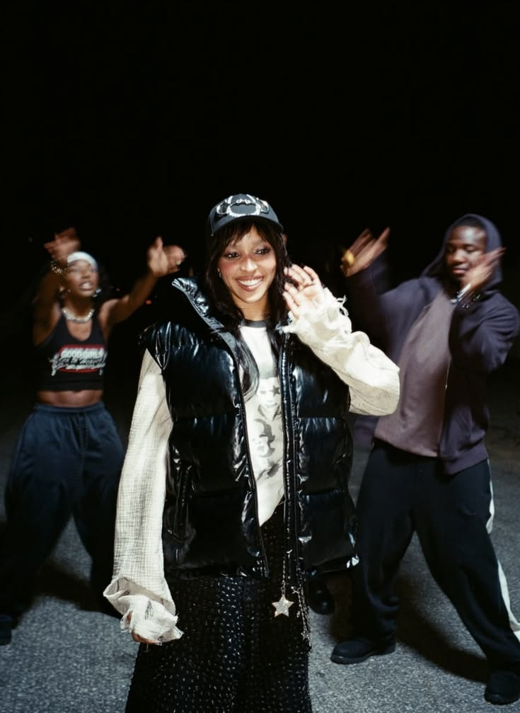
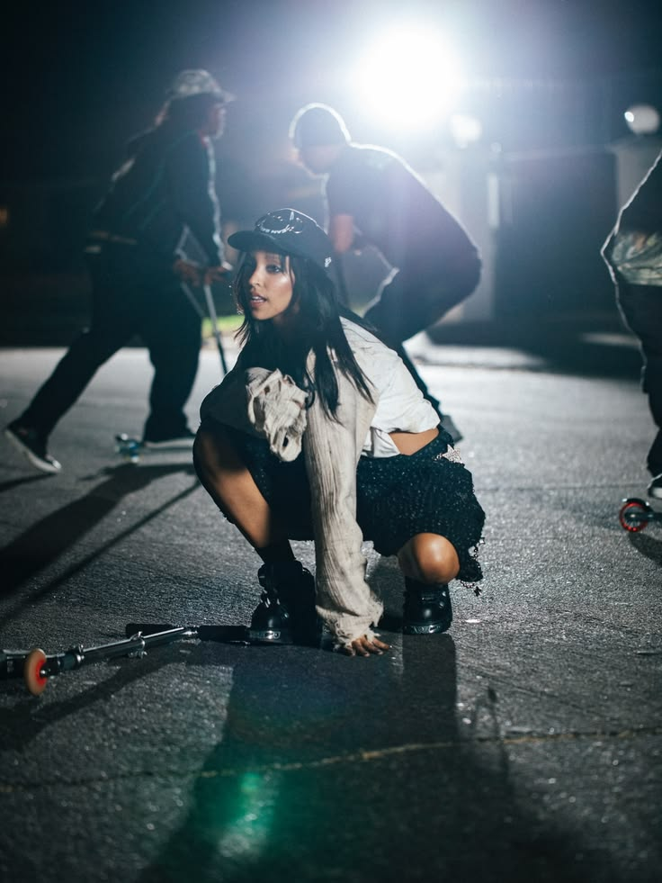
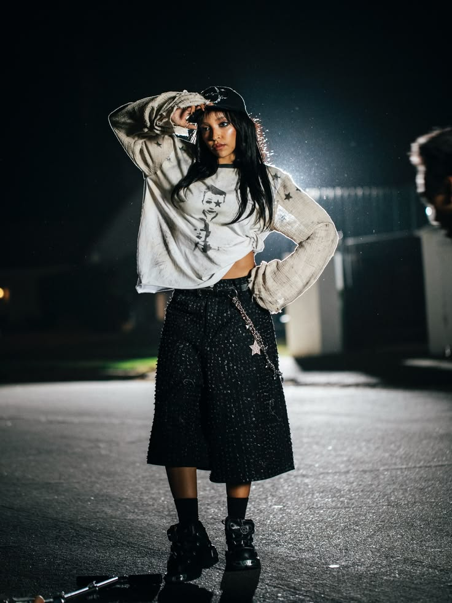
Scroll to explore Tinashe's discography. Click on a cover to learn more!
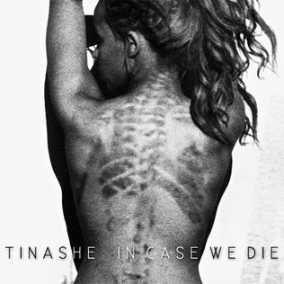
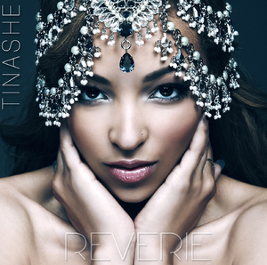
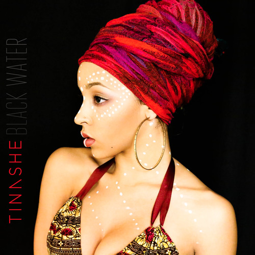
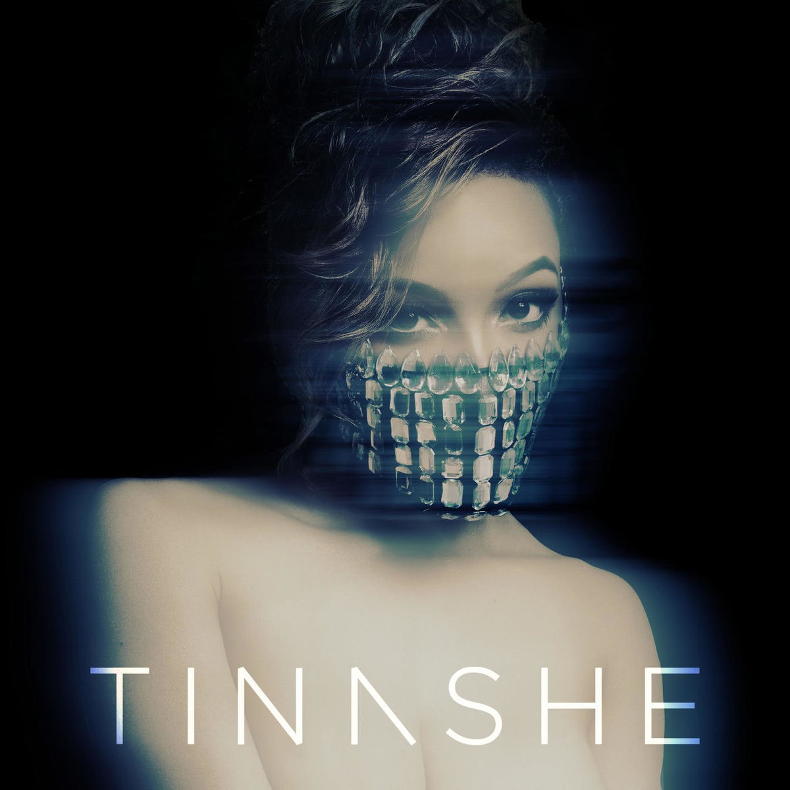
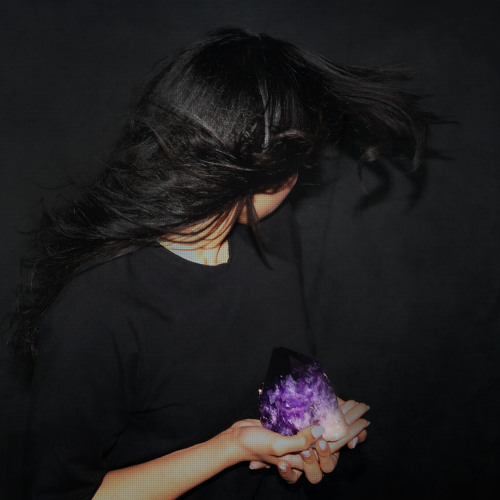
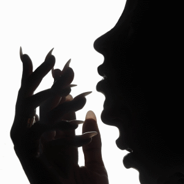
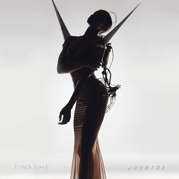
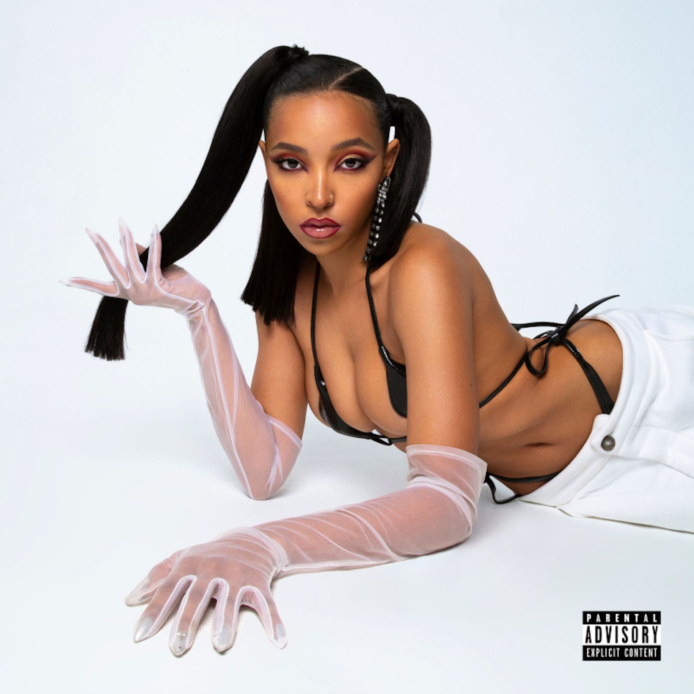
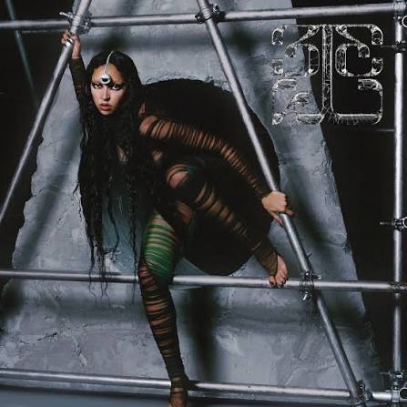
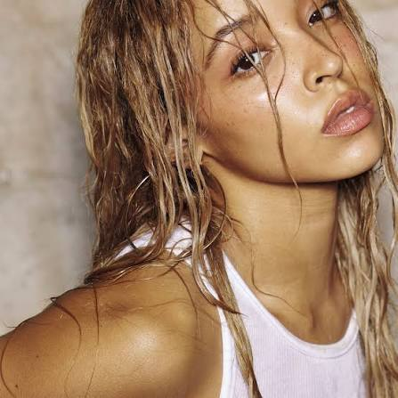
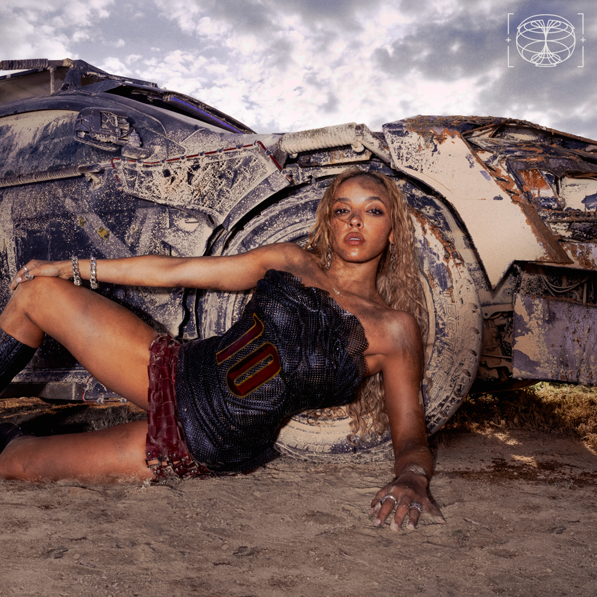
In Case We Die
2012
Genres: Alternative R&B, Electronic, Trap Soul
Recommended tracks: The Last Night On Earth, Let You Love Me, Crossing The Cosmo
Frequently Asked Questions
Tinashe's first hit was her lead single for her debut album, Aquarius song, 2 On featuring ScHoolboy Q. The song reached number 24 on the US Billboard Hot 100.
Yes, Tinashe has performed at Coachella a total of 3 times. She joined Snakehips and Blackbear as a surpise guest in 2018, performed both weekends in 2024, as well as performed a DJ set in 2026.
You can see Tinashe live at one of her many "The Show Must Go On" North American Tour dates between April 14th-May 16th.